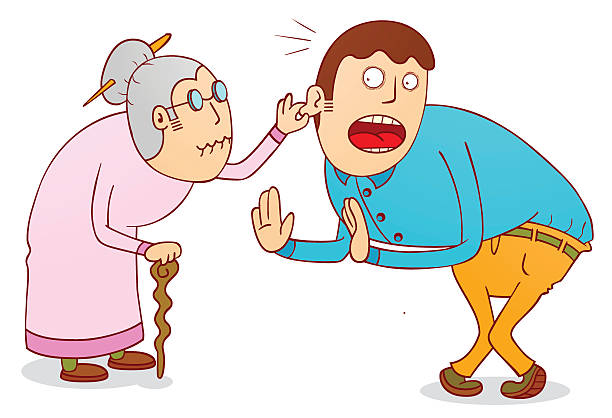

div.bullet {
text-align: left !important;
}
div.bullet ui {
text-align: left !important;
margin-left: 0 !important;
padding-left: 20px;
}Technical Report
Documentation of your psychometrics project occurs within a technical report. The technical report contains, at minimum:
- Title page
- Executive Summary
- Table of Contents
- Introduction
- Methods
- Results
- Discussion
- Appendices
Important 1: Technical Report Elements
Take note of Bulleted List 1 element #s 2 (Executive Summary), 3 (Table of Contents) and 8 (Appendices) as these differ from the expected content within a traditional “APA paper”.
Your goal within a technical report is the exact communication of development and investigation of psychometric properties of your focal measure. You should use the reading level necessary to convey your project with the highest level of semantic integrity.1
Although you can use style guidelines (such as may be found in the publication manual of the APA), you should not feel constrained by these. The content should reflect the elements within @list-items, but the format should reflect the authoring organization. Have some fun with the format – use icons, images, and even (non–obtrusive) fonts with restrained abandon. You may want to consult a friend who has experience with graphic design or other artistic ventures. The format should reflect YOU, not some stodgy arbiter of margin dimensions or running head capitalization.

Title page
Executive Summary
Introduction
Methods
Results
Discussion
References
Table of contents
Appendices
All of your raw (unformatted) analytical information can go in Appendices, including code used to produce the output. It’s quite likely noone will ever read it, but you did it and the odds are technically non-zero that it’ll be someday relevant, so go ahead and throw it in. It’s good practice to include your software installations as well, which can be accomplished easily with sessionInfo() command on August 09, 2025 gives us:
R version 4.3.1 (2023-06-16 ucrt)
Platform: x86_64-w64-mingw32/x64 (64-bit)
Running under: Windows 10 x64 (build 19045)
Matrix products: default
locale:
[1] LC_COLLATE=English_United States.utf8
[2] LC_CTYPE=English_United States.utf8
[3] LC_MONETARY=English_United States.utf8
[4] LC_NUMERIC=C
[5] LC_TIME=English_United States.utf8
time zone: America/Chicago
tzcode source: internal
attached base packages:
[1] stats graphics grDevices utils datasets methods base
loaded via a namespace (and not attached):
[1] htmlwidgets_1.6.2 compiler_4.3.1 fastmap_1.1.1 cli_3.6.1
[5] tools_4.3.1 htmltools_0.5.7 rstudioapi_0.15.0 yaml_2.3.7
[9] rmarkdown_2.25 knitr_1.45 jsonlite_1.8.8 xfun_0.49
[13] digest_0.6.33 rlang_1.1.1 evaluate_0.23 see Section 1
Footnotes
The anticipated reading–level of technical report information should be considered and aimed at the intended audience (commonly, but not always, college–level). Information should also often be made available to a general consumer audience (7th–grade reading level) in the form of white papers, local validation studies, and marketing material.↩︎